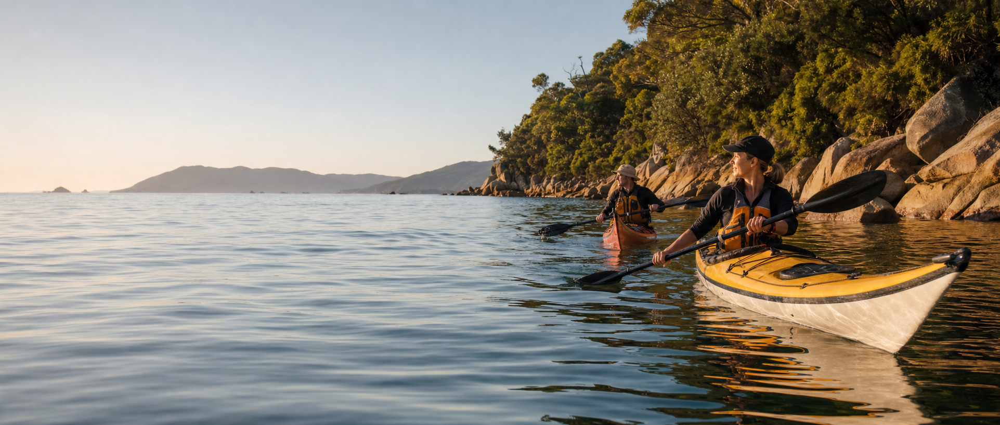

Half day · Easy pace
Morning coves
06 km- Sheltered-water skills briefing
- Beach stop and hot drink
- All paddling equipment supplied

Guided sea-kayak days planned around the conditions, your confidence and the quiet corners between the beaches.
Trip fit matters more than ticking off distance. Start with the time, pace and experience that feels right.
Half day · Easy pace
Full day · Active
“The best route is the one the sea is offering that morning.”
Routes are confirmed after weather and coastal conditions are assessed.
Your guide checks the forecast, wind and swell that morning, then chooses a line from the beach briefing through the bays to a sheltered finish.
Weather, swell, water temperature and landing points are reviewed before every departure. Routes may change or trips may be postponed.
Open water, cold water and changing coastal conditions can carry serious risk. The full risk information belongs before checkout.
Swimming confidence, medical details, mobility and previous paddling help the guide confirm whether a trip is suitable.